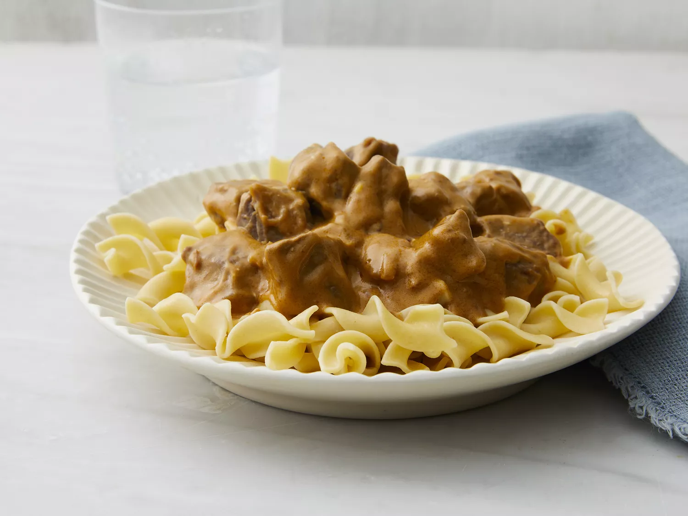

Back to Home
Stroganoff

Description
This crock pot beef stroganoff is an easy variation of a favorite. I used to prepare it the traditional way with sour cream but was out of it one night, so I used cream cheese instead. Serve over hot cooked egg noodles or rice.
Ingredients
- 1 pound cubed beef stew meat
- 1 (10.75 ounce) can condensed golden mushroom soup
- 1/2 cup chopped onion
- 1/4 cup water
- 1 tablespoon Worcestershire sauce
- 4 ounces cream cheese
Steps
- Combine beef, soup, onion, water, and Worcestershire sauce in a slow cooker.
- Cook on Low for 8 hours or High for 5 hours. Stir in cream cheese just before serving.
- Enjoy hot served over cooked noodles.
Source